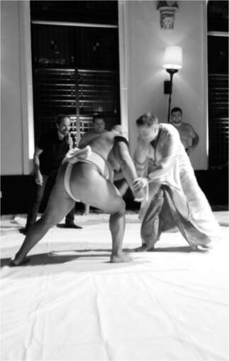
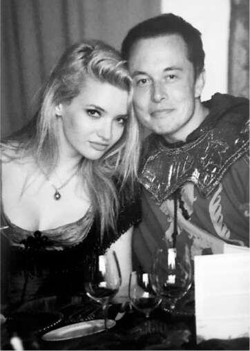
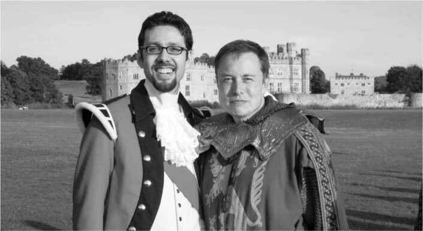

Khi Talulah Riley kết hôn với Musk vào năm 2010, cô chuyển đến California và gần như từ bỏ sự nghiệp diễn xuất của mình. Là con một, cô luôn mơ ước có nhiều con, và trong những bức tranh cô vẽ luôn có hai cậu bé tóc vàng sinh đôi. "Khi tôi gặp Elon, anh ấy đã có năm đứa con và những đứa lớn nhất là cặp song sinh tóc vàng xinh xắn, cảm giác như chúng bước ra từ trí tưởng tượng của tôi." Nhưng thận trọng về mối quan hệ của họ, cô quyết định không sinh con với anh.
Cô tiếp tục dàn dựng các bữa tiệc cho Musk, như đã từng làm ở Scotland cho đám cưới của họ và trên chuyến tàu Orient Express cho sinh nhật lần thứ 40 của anh. Cho sinh nhật lần thứ 41, cô thuê một ngôi nhà sang trọng ở vùng quê nước Anh và lấy chủ đề "Flying Down to Rio", dựa trên bộ phim năm 1933, lần đầu tiên kết hợp Fred Astaire và Ginger Rogers, với cao trào là màn khiêu vũ trên cánh máy bay. Cô thuê đội Breitling Wingwalkers, và khách mời được hướng dẫn cách đi trên cánh máy bay hai tầng.
Nhưng Musk đã bỏ lỡ phần lớn bữa tiệc và thay vào đó dành thời gian trong phòng, gọi điện xử lý các vấn đề khác nhau tại Tesla và SpaceX. Anh thích tập trung vào công việc. Đôi khi, anh coi phần còn lại của cuộc sống như một sự phân tâm khó chịu. “Lượng thời gian tôi dành cho công việc quá lớn đến mức rất khó duy trì bất kỳ mối quan hệ nào”, anh thừa nhận. “Riêng SpaceX và Tesla đã khó khăn rồi. Làm cả hai cùng lúc gần như bất khả thi. Vì vậy, lúc nào cũng chỉ có công việc.”
Maye Musk thông cảm với Talulah. “Cô ấy mời tôi ăn tối, và Elon không đến vì anh ấy làm việc muộn”, bà nói. “Cô ấy yêu anh ấy rất nhiều, nhưng có thể hiểu được việc cô ấy mệt mỏi vì bị đối xử như vậy.”
Khi tâm trí anh ấy dành cho công việc, tức là hầu hết thời gian, Talulah không biết làm thế nào để gần gũi với anh. Anh ấy dường như luôn trong một cuộc chiến sinh tử với một vấn đề nào đó, hoàn toàn trái ngược với cuộc sống ở ngôi làng quê hương Anh của cô, nơi mọi người ở quán rượu và nhà thờ đều rất thân thiện. “Tôi cảm thấy đây không phải là cuộc sống tôi nên sống”, cô nói. “Tôi ghét Los Angeles và tôi nhớ nước Anh da diết.”
Vì vậy, vào năm 2012, cô đệ đơn ly hôn và chuyển đến một căn hộ ở Santa Monica trong khi luật sư của họ giải quyết các thủ tục. Nhưng khi họ gặp nhau tại tòa án bốn tháng sau đó để ký thỏa thuận, câu chuyện đã có một bước ngoặt như phim. “Tôi thấy Elon ở đó, đứng trước mặt thẩm phán, và anh ấy hỏi đại loại là, 'Chúng ta đang làm cái quái gì vậy,' rồi chúng tôi bắt đầu hôn nhau”, cô nói. “Tôi nghĩ vị thẩm phán cho rằng chúng tôi bị điên.” Musk yêu cầu cô quay lại nhà anh và gặp các con trai. “Chúng đã tự hỏi em đang ở đâu.” Và cô đã làm vậy.
Họ vẫn ly hôn, nhưng cuối cùng cô lại chuyển về sống cùng anh. Để ăn mừng, họ đã có một chuyến đi bằng chiếc Model S mới cùng năm đứa trẻ. Anh cũng đưa cô đi ăn trưa với nhà văn Tom Junod của Esquire. Công việc chính của cô, cô nói với Junod, là giữ cho Musk không trở nên "điên như vua". “Anh chưa bao giờ nghe thấy cụm từ đó sao?” cô hỏi. “Nó có nghĩa là mọi người trở thành vua, rồi họ phát điên.”
Vào sinh nhật lần thứ 42 của anh, tháng 6 năm 2013, Talulah đã thuê một tòa lâu đài giả ở Tarrytown, New York, ngay phía bắc thành phố New York, và mời bốn mươi người bạn. Lần này chủ đề là steampunk Nhật Bản, và Musk cùng những người đàn ông khác ăn mặc như những chiến binh samurai. Có một buổi biểu diễn vở The Mikado của Gilbert và Sullivan, được viết lại đôi chút để Musk đóng vai hoàng đế Nhật Bản, và một màn trình diễn của một người ném dao. Musk, không bao giờ né tránh rủi ro, kể cả những rủi ro không cần thiết, đã đặt một quả bóng bay màu hồng ngay dưới háng để người ném dao bị bịt mắt nhắm vào.
Cao trào là màn trình diễn đấu vật Sumo. Cuối cùng, nhà vô địch nặng 350 pound của nhóm đã mời Musk vào võ đài. “Tôi đã dùng toàn lực để vật anh ta bằng judo, vì tôi nghĩ anh ta đang cố gắng nhẹ nhàng với tôi”, Musk nói. “Tôi quyết định xem liệu mình có thể quật ngã anh chàng này không, và tôi đã làm được. Nhưng tôi cũng làm lệch đĩa đệm ở cổ.”
Kể từ đó, Musk bị những cơn đau lưng và cổ dữ dội; ông đã phải trải qua ba cuộc phẫu thuật để cố gắng chữa lành đĩa đệm C5-C6. Trong các cuộc họp tại nhà máy Tesla hoặc SpaceX, đôi khi ông nằm thẳng trên sàn với một túi đá chườm ở cổ.
Vài tuần sau bữa tiệc ở Tarrytown, vào tháng 7 năm 2013, ông và Talulah quyết định tái hôn. Lần này, buổi lễ diễn ra rất đơn giản trong phòng ăn của họ. Tuy nhiên, không phải câu chuyện cổ tích nào cũng có kết thúc có hậu. Nỗi ám ảnh với công việc của Musk tiếp tục gây ảnh hưởng đến mối quan hệ của họ. "Rồi chuyện cũ lại lặp lại, và tôi muốn trở về nhà", cô nói. Cô bắt đầu lại sự nghiệp điện ảnh của mình bằng việc viết kịch bản, đạo diễn và đóng vai chính trong một bộ phim hài có tên Scottish Mussel, kể về một tên tội phạm xui xẻo quyết định săn trộm trai ngọc từ các con sông. Khi Musk và các con trai đến thăm cô trong quá trình quay phim, cô nói với ông rằng cô muốn ở lại Anh và ly hôn lần nữa.
Sau một vài lần do dự và hàn gắn, cô đã đưa ra quyết định cuối cùng vào sinh nhật lần thứ ba mươi của mình, vào tháng 9 năm 2015. Cô hoàn thành việc quay bộ phim truyền hình Westworld của HBO ở Los Angeles, sau đó trở về Anh định cư. Nhưng cô đã hứa với ông. "Anh là Mr. Rochester của em", cô nói, ám chỉ người chồng u sầu trong tiểu thuyết Jane Eyre của Charlotte Brontë. "Và nếu Thornfield Hall bị thiêu rụi và anh bị mù, em sẽ đến bên anh và chăm sóc anh."

Đối đầu với một đô vật Sumo

Với Talulah

Với Navaid Farooq